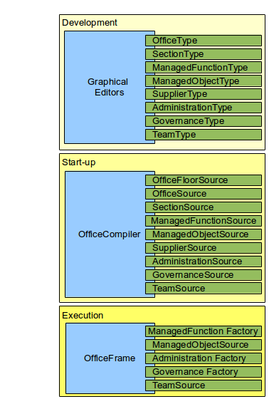

The OfficeFloor architecture is based on design patterns observed in an Office. While OfficeFloor respects technical design patterns, OfficeFloor looks at the evolved "real world" patterns people intuitively understand for organising information and servicing requests. This is reflected in the various Sources within OfficeFloor.
The name OfficeFloor comes from this focus.
The architecture for OfficeFloor has three distinct layers.
The OfficeFloor graphical editors are plugins to the IDE. They utilise the OfficeCompiler to compile the Sources into 'types'. These 'types' are then graphically configured together by the IDE plug-ins to make up the OfficeFloor configuration.
The OfficeCompiler loads the Sources into the OfficeFrame. It takes care of validating 'type' compatibility between the Sources so that the constructed application is type safe.
The OfficeFrame is the core of the Inversion of Coupling Control that gives OfficeFloor its flexibility and performance. It simplifies the functionality of an application into functions where each type of function is executed by a particular Team. These functions then can depend on other objects and functions for their execution.
Sources are the building blocks of OfficeFloor. The term Source is used in two ways:
The first meaning is to provide an object for use. In this sense a Source is like a javax.sql.DataSource to a java.sql.Connection.
The second meaning is to enable the Source to be compiled into a type. The ability to provide a type allows both validation and configuration of the Sources into an application.
There are different sources that provide distinct responsibilities to an application.
In building OfficeFloor web applications, WoOF (Web on OfficeFloor) provides many pre-built Sources that only require configuring. Also the automagic dependency and thread injection used by WoOF and the WoOF specific graphical editors reduce the need to understand each Source in detail.
The following table lists the Sources within OfficeFloor.
| Source | Description |
|---|---|
| TeamSource | Provides thread pools for execution of functions. A thread pool is known as a Team within OfficeFloor. |
| ManagedFunctionSource | Provides functions that contain application functionality. |
| ManagedObjectSource | Provides objects that are made available to the functions. The objects are such things as java.sql.Connection, javax.jms.Message, java.nio.channels.SocketChannel (objects you would dependency inject). |
| SupplierSource | Supplies multiple ManagedObjectSources for use. This allows grouping Managed Objects together under under simpler configuration. An example of use is integrating with Spring to supply a Managed Object for each Spring bean within a BeanFactory. This typically allows integrating other Dependency Injection Only frameworks into OfficeFloor. |
| GovernanceSource | Provides context for functions to be run within. Typical use is specifying the transaction management over the functions. |
| AdministrationSource | Provides functions which can be weaved between the application functions. This allows for Aspect style functionality to handle such things as checking access permissions before executing a series of functions. |
| SectionSource | Configuration of how the Managed Function and Managed Objects are connected together. Sections may also contain other sections to break down configuration into manageable encapsulated detail. Typically this is represented graphically so that all stake holders can work together on these diagrams to ensure the requirements for the application are being met. |
| OfficeSource | Configuration of an application. An application is known as an Office within OfficeFloor. An Office provides the details of how the Sections are connected together. It also specifies the Governance and Administration of functions along with assigning Teams responsible to execute the respective functions. The reason for Governance, Administration and Team assigning within the Office is to abstract this away from Sections so that the stake holders can focus on application functionality rather than being caught up with these aspects. |
| OfficeFloorSource | Configuration of deploying applications. It is also where this project got its name. An OfficeFloor may host many Offices where each Office is made up of many Sections. The OfficeFloor allows tuning the Offices to the hardware/network it is running on by specifying the physical Teams and Managed Object Sources of the Offices. |
The main focus of the OfficeCompiler is to compile the Sources configured by the graphical editors into the OfficeFrame for execution. Typically compilation follows these steps:
To aid in rapid application development (RAD), graphical editors are available in the IDEs to reduce time spent configuring. To allow the graphical editors to validate the connections between Sources, the graphical editors require the type information of the Sources. OfficeCompiler provides this functionality so that the graphical editors can focus on graphical editing.